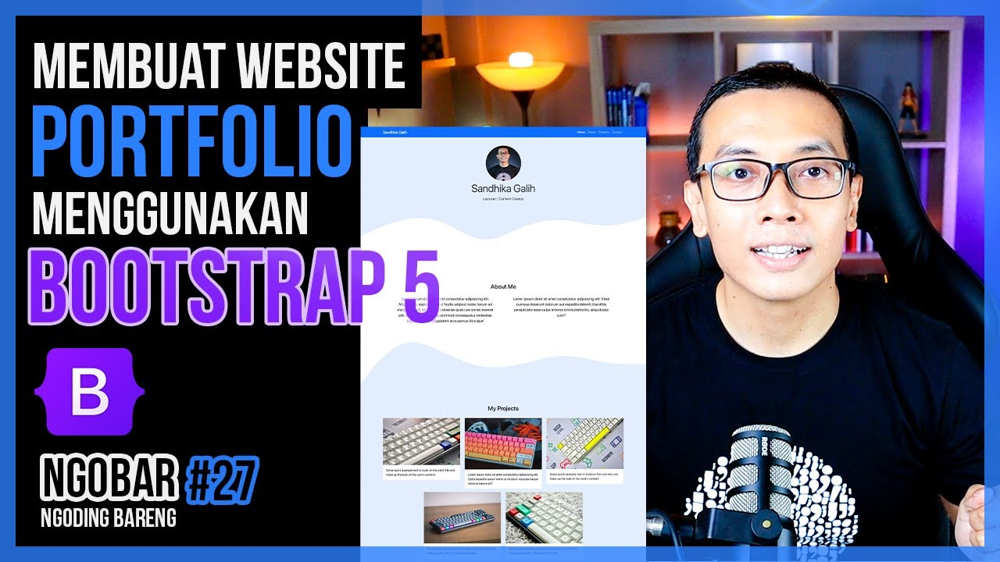

I think I first got to know web development around 2014. Back then, I was just a kid who wanted to build something on the internet.
I started with HTML. Honestly, all I wanted was to put an image on a webpage. Sounds simple, right? Not for me back then. I spent hours struggling just to make an image show up properly. I was only 11 years old at the time, so that was probably to be expected.
During that period, I also tried Bootstrap for the first time. I had no idea how to use it, and I did not manage to build anything useful with it either. But one thing stood out: there were so many technologies available for building websites. That was the spark that got me curious about web development.
Getting Started with My First Personal Site
Fast forward to around 2021, I started developing my first personal site.
I remember watching tutorials by Sandhika Galih on YouTube. His videos introduced me to building websites using HTML, Bootstrap, and even hooking up a contact form to Google Sheets. It was a simple setup, but it made me realize that I could build something genuinely useful with just a few basic tools.

That was when I started taking web development more seriously.
I began exploring deeper into CSS and eventually moved to utility CSS frameworks like Tailwind CSS. Styling websites became surprisingly enjoyable. There was something satisfying about turning a plain HTML structure into an actual interface, and that was where my interest in frontend development really took off.
Exploring the Web Development Ecosystem
As I continued learning, I started exploring different technologies across the web stack.
One of the first programming languages I encountered for the web was PHP. To be honest, PHP was not my favorite language at first, but it was part of the learning process and taught me a lot.
At that point, I realized web development was much bigger than just HTML and CSS. There were frontend frameworks, backend runtimes, databases, state management, APIs, and endless tools to explore.
Btw, my first experience with a modern frontend stack was React paired with Redux. And yeah, it was really difficult for me lol. There were so many concepts to grasp, and managing state with Redux felt overwhelming at the time.
Then, one of my teachers suggested that I try Vue instead.
And I fell in love with it. Seriously, thanks god I found Vue.
I found Vue much more comfortable to work with. Its approach to components, templates, and reactivity made complete sense to me. I built quite a few prototypes using Vue and Tailwind CSS. It was a fun period because I could focus on building interfaces and experimenting with ideas instead of constantly fighting my tools.
I Needed a Backend +_+
Eventually, I started building applications that required more than just a frontend. I needed dynamic data, database integration, authentication, and backend capabilities.
Since I was studying Software Engineering at a vocational high school (SMK), I was introduced to Supabase as a Backend as a Service (BaaS). At that time, Supabase was becoming popular, especially because it used PostgreSQL as its database engine.
That was particularly interesting to me because I was already familiar with relational databases and SQL. Before that, Firebase was another option I had tried, but its document NoSQL approach felt less familiar than working with relational tables.
Supabase felt like a natural fit. It allowed me to work with PostgreSQL without having to build and manage an entire backend from scratch. From there, my projects became more ambitious, and I started exploring more technologies and architecture patterns.
Building My Seriously Personal Site
After learning Vue and exploring backend technologies, I eventually started building a more complete version of my personal site.
At this point, I wanted something more than just a simple webpage with my name and a list of projects. I wanted a digital home where I could introduce myself, showcase my work, share my thoughts, and give people a better understanding of who I am as a developer.
The personal site was built using Nuxt, Tailwind CSS, Supabase, along with a few small helper JavaScript libraries.
I chose Nuxt because I was already comfortable with Vue, and Nuxt provided a structured way to build a complete website. Tailwind CSS helped me build the interface faster, while Supabase handled the data and backend features.
The website was designed around several main sections:
- Hero Section: The first greeting visitors see. It introduces me, gives a brief overview of what I do, and provides a starting point for exploring the rest of the site.
- About Me: A place where I share more about my background, interests, and journey in software engineering.
- Projects: A collection of projects I worked on, including descriptions, tech stacks, and source links.
- Blog: A space where I write about technical experiences, things I learned, personal opinions, and random thoughts related to software engineering.
- Contact: Direct ways to reach me through email and social media.
- My Music: A personal touch displaying some of my favorite tracks. I think a personal site does not always have to be strictly corporate, adding something personal makes it feel more like me.
"I can do anything I want, it's my personal site loller."
Why Did I Choose Supabase
One of the key parts of this project was how I managed its content. Since I wanted the personal site to be dynamic, I wanted a way to manage project information, blog posts, and other content without manually changing frontend code every time.
I used Supabase as the backend, with PostgreSQL as the database. Instead of hardcoding everything into templates, I could store and retrieve content dynamically.
At the time, that felt like a reasonable architectural decision. Connecting Nuxt to Supabase also gave me an opportunity to explore database queries, API requests, and client-server communication. It was not just about making my site work, it was also a great learning experience.
But Do I Really Need All of That?
After using this setup for a while, I started looking at the project from a different perspective.
The personal site was working fine, and I had no complaints about Nuxt or Supabase as tools. The question was whether that architecture still made sense for what the website actually needed.
Think about how often I update my personal site. Maybe once every two months, and usually just to add one new project. The blog is something I update occasionally rather than every day. My music section does not need frequent changes either. And for contact, most people who reach out contact me directly through social media anyway.
So I started questioning the value of maintaining a database and a CMS workflow for a small amount of relatively static information. Was I solving an actual problem, or was I just maintaining a system I did not really need?
The Cost of Keeping Things Dynamic
Another thing I started considering was the operational cost and external dependencies.
Supabase offers a generous free tier, which is great for personal projects. However, free services come with usage quotas, resource limitations, and inactivity policies that pause your database if there is no traffic for a while. I did not like having an external cloud dependency just to display a few project entries and blog posts.
On the other hand, what if I hosted my own backend and database on a VPS? Let's assume I rent a small VPS for around IDR 150,000 per month. It might seem affordable at first, but the cost adds up over time:
| Period | Estimated Cost |
|---|---|
| 1 month | IDR 150,000 |
| 1 year | IDR 1,800,000 |
| 2 years | IDR 3,600,000 |
| 3 years | IDR 5,400,000 |
Note: These figures are estimates based on a fixed monthly VPS cost of IDR 150,000, excluding domain registration, backups, and server maintenance overhead.
Spending IDR 5.4 million over three years, plus handling server monitoring, security updates, and backups, just to keep a personal site alive felt excessive. I enjoy Linux system administration, but enjoying something does not mean I should force it into every small project.
What Programming in C Taught Me About Web Bloat
Around that same time, my focus shifted toward systems programming in C across Linux and Windows. I built native desktop applications, wrote a lightweight relational database client from scratch, and created a CLI music player.
Working with C changes how you think about software. When you build native applications or CLI tools in C, you become hyper-aware of memory, dependencies, and what the machine is actually doing under the hood. Your program compiles into a tiny, fast binary that does exactly what it needs to do, nothing more, nothing less.
Then I looked back at my personal site.
To render a few pages of text, links, and images, I was relying on a massive node_modules folder, a reactive JavaScript framework, a CSS build pipeline, and remote API calls to a cloud database. After experiencing the raw simplicity and speed of native C programs, my web stack suddenly felt unnecessarily bloated.
I realized I wanted my personal site to reflect that same philosophy: close to the platform of the browser, zero unnecessary abstractions, and completely self-contained.
Do I Really Need a CMS?
When I looked closely at my workflow, the contrast became even clearer.
With a dynamic CMS-based approach, I had to maintain:
- The content management interface.
- The PostgreSQL database and its schema.
- The connection and environment variables between Nuxt and Supabase.
- API requests, loading states, and error handling.
- External service availability.
- Build and deployment configurations.
With a static approach using plain HTML, CSS, and JavaScript, the workflow is stripped down to the essentials:
- Open the HTML file and edit the text.
- Commit the changes to Git.
- Push to deploy.
That is it. I also get version control for free through Git. Every content update becomes part of the repository history, allowing me to track modifications and roll back changes effortlessly.
For contact, direct links to my LinkedIn, GitHub, and email accomplish the exact same goal as a backend contact form without any of the complexity. And for the blog and music sections, static files are more than enough for content that only changes occasionally.
Back to HTML, CSS, and JavaScript
After considering all of that, I decided to rewrite my entire personal site using plain HTML, CSS, and JavaScript. No Nuxt. No Tailwind build step. No Supabase. No database. Just the fundamentals of the web.
This was not because I suddenly disliked modern frameworks. I still use them for complex applications where they provide real value. But for my personal site, I wanted radical simplicity.
For hosting, I can simply use static platforms like GitHub Pages or Cloudflare Pages at zero cost, with near-instant load times and zero database cold starts.
The result is a much cleaner architecture:
- No database or backend infrastructure to maintain.
- Zero external runtime dependencies or build step headaches.
- No CMS to manage.
- A frictionless Git deployment workflow.
- Zero operational cost.
Most importantly, I can spend my time building actual software, whether that is full-stack web apps or native tools in C, instead of maintaining the infrastructure behind a personal site that rarely changes.
Engineering Is Knowing What to Leave Out
Being a software engineer is not about always using the latest technology, chasing the most popular framework, or building the most sophisticated architecture possible. It is about understanding the problem, respecting the platform, and choosing an appropriate solution.
There is a big difference between building something because we need it and building something simply because we can.
In my case, moving from Nuxt, Tailwind, and Supabase back to plain HTML, CSS, and JavaScript was not a step backward. It was a conscious engineering decision. Sometimes, the best engineering decision is not adding another technology, it is knowing when to strip things away.
Looking Back
Back in 2014, I was just an 11 year old kid trying to figure out how to put an image on a webpage. Years later, after experimenting with reactive frameworks, cloud databases, and low-level C programming, I find myself appreciating the web's core foundations more than ever.
Learning those frameworks was still a great experience because it taught me why and when certain abstractions actually matter. But for this site, going back to basic HTML, CSS, and vanilla JavaScript felt like the right move.